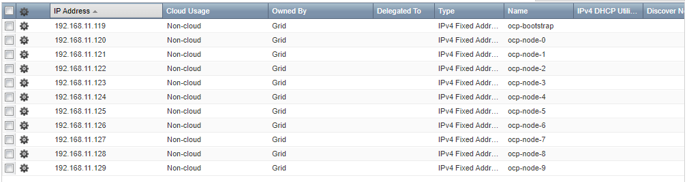
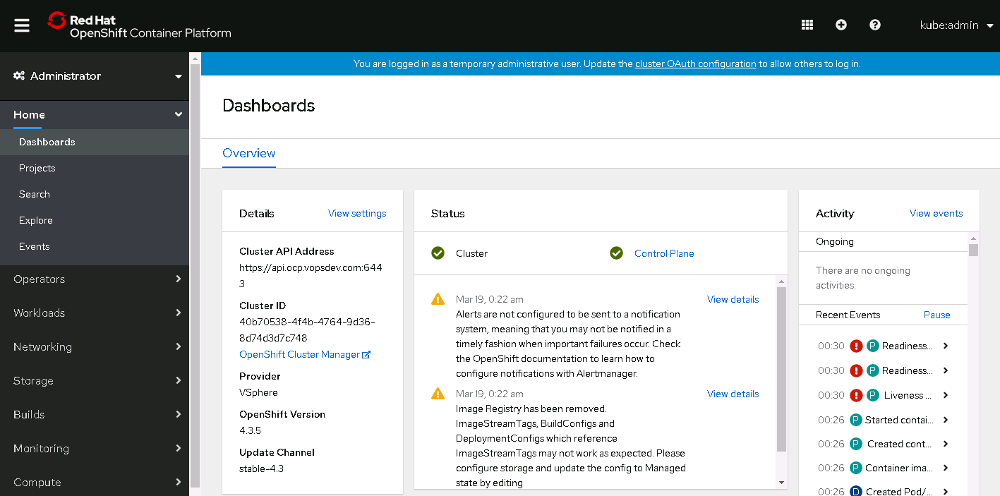

本文记录了离线环境下以 UPI (User Provisioned Infrastructure) 模式初始安装 OCP 4.3.5 集群的步骤, 包括地址/DNS 名称规划, DHCP, 负载均衡配置, ignition 文件生成, 到最后的集群部署.
IaaS 平台为 VMware vSphere 6.7U2. DDI 方案使用 Infoblox NIOS. 负载均衡方案使用 HAProxy
DNS 及 IP 地址规划
| DNS 记录 | 类型 | 值 | 说明 |
|---|---|---|---|
| ocp-bootstrap.int.vopsdev.com | A | 192.168.11.119 | bootstrap 节点. A 记录对应的 PTR 记录也同时创建出来, 下同 |
| ocp-node-0.int.vopsdev.com | A | 192.168.11.120 | master 节点 |
| ocp-node-1.int.vopsdev.com | A | 192.168.11.121 | master 节点 |
| ocp-node-2.int.vopsdev.com | A | 192.168.11.122 | master 节点 |
| ocp-node-3.int.vopsdev.com | A | 192.168.11.123 | worker 节点 |
| ocp-node-4.int.vopsdev.com | A | 192.168.11.124 | worker 节点 |
| ocp-node-5.int.vopsdev.com | A | 192.168.11.125 | worker 节点 |
| api.ocp.vopsdev.com | CNAME | lb-if-192-168-11-249.int.vopsdev.com | 别名, 指向现有的 LB 记录 |
| api-int.ocp.vopsdev.com | CNAME | lb-if-192-168-11-249.int.vopsdev.com | 如果有需要, api 和 api-int 可以分别指向内部/外部 LB |
| *.apps.ocp.vopsdev.com | CNAME | lb-if-192-168-11-249.int.vopsdev.com | |
| etcd-0.ocp.vopsdev.com | CNAME | ocp-node-0.int.vopsdev.com | |
| etcd-1.ocp.vopsdev.com | CNAME | ocp-node-1.int.vopsdev.com | |
| etcd-2.ocp.vopsdev.com | CNAME | ocp-node-2.int.vopsdev.com | |
| _etcd-server-ssl._tcp.ocp.vopsdev.com | SRV | 0 10 2380 etcd-0.ocp.vopsdev.com | |
| _etcd-server-ssl._tcp.ocp.vopsdev.com | SRV | 0 10 2380 etcd-1.ocp.vopsdev.com | |
| _etcd-server-ssl._tcp.ocp.vopsdev.com | SRV | 0 10 2380 etcd-2.ocp.vopsdev.com |
DHCP
所有 OCP 节点都通过 DHCP 自动获取 IP. DHCP 上做预留 (在 Infoblox 里叫 fixed address), 确保每个节点都可以获取预先规划的地址.

由于节点 MAC 地址要在虚拟机部署之后才能确定, 这里先随便填写. 后面部署节点时会通过 Infoblox API 动态更新 fixed address 记录的 MAC 字段.
负载均衡
负载均衡器目前使用是 HAProxy, 简单写几个四层 LB 配置 1
2
3
4
5
6
7
8
9
10
11
12
13
14
15
16
17
18
19
20
21
22
23
24
25
26
27
28
29
30
31
32
33
34
35
36
37
38
39
40
41
42
43
44
45
46
47
48
49
50
51
52
53frontend vs_ocp_master_6443
mode tcp
option tcplog
bind 192.168.11.249:6443
default_backend pl_ocp_master_6443
frontend vs_ocp_master_22623
mode tcp
option tcplog
bind 192.168.11.249:22623
default_backend pl_ocp_master_22623
frontend vs_ocp_router_80
mode tcp
option tcplog
bind 192.168.11.249:80
default_backend pl_ocp_router_80
frontend vs_ocp_router_443
mode tcp
option tcplog
bind 192.168.11.249:443
default_backend pl_ocp_router_443
backend pl_ocp_master_6443
mode tcp
balance source
server ocp-node-0 ocp-node-0.int.vopsdev.com:6443 check
server ocp-node-1 ocp-node-1.int.vopsdev.com:6443 check
server ocp-node-2 ocp-node-2.int.vopsdev.com:6443 check
server ocp-bootstrap ocp-bootstrap.int.vopsdev.com:6443 check
backend pl_ocp_master_22623
mode tcp
balance source
server ocp-node-0 ocp-node-0.int.vopsdev.com:22623 check
server ocp-node-1 ocp-node-1.int.vopsdev.com:22623 check
server ocp-node-2 ocp-node-2.int.vopsdev.com:22623 check
server ocp-bootstrap ocp-bootstrap.int.vopsdev.com:22623 check
backend pl_ocp_router_80
mode tcp
balance source
server ocp-node-3 ocp-node-3.int.vopsdev.com:80 check
server ocp-node-4 ocp-node-4.int.vopsdev.com:80 check
server ocp-node-5 ocp-node-5.int.vopsdev.com:80 check
backend pl_ocp_router_443
mode tcp
balance source
server ocp-node-3 ocp-node-3.int.vopsdev.com:443 check
server ocp-node-4 ocp-node-4.int.vopsdev.com:443 check
server ocp-node-5 ocp-node-5.int.vopsdev.com:443 check
准备 ignition 文件
编写 install-config.yaml
根据环境的实际情况编写 install-config.yaml. 下面是我的实验环境所使用的版本 1
2
3
4
5
6
7
8
9
10
11
12
13
14
15
16
17
18
19
20
21
22
23
24
25
26
27
28
29
30
31
32
33
34
35
36
37
38
39
40apiVersion: v1
baseDomain: vopsdev.com
compute:
- hyperthreading: Enabled
name: worker
replicas: 0
controlPlane:
hyperthreading: Enabled
name: master
replicas: 3
metadata:
name: ocp
platform:
vsphere:
vcenter: vc.int.vopsdev.com
username: xxx
password: xxx
datacenter: HDC
defaultDatastore: DS-SHARED
fips: false
networking:
networkType: OpenShiftSDN
clusterNetworks:
- cidr: 10.9.0.0/20
hostPrefix: 24
serviceNetwork:
- 172.16.0.0/20
sshKey: 'ssh-rsa ...'
additionalTrustBundle: |
-----BEGIN CERTIFICATE-----
...
-----END CERTIFICATE-----
imageContentSources:
- mirrors:
- quay.svc.vopsdev.com/openshift-release-dev/ocp-v4.0-art-dev
source: quay.io/openshift-release-dev/ocp-release
- mirrors:
- quay.svc.vopsdev.com/openshift-release-dev/ocp-v4.0-art-dev
source: quay.io/openshift-release-dev/ocp-v4.0-art-dev
pullSecret: '{"auths":{...}}'
一些注释
- metadata.name + baseDomain 组成集群的基础域名, 这里是 ocp.vopsdev.com
- 需要在 vSphere Datacenter 下按照 metadata.name 建立一个虚拟机目录, 将来创建 vSphere 动态卷需要, 具体原因看这里. 然而你并不需要将 OCP 节点放到这个虚拟机目录下
- platform 下的 vcenter 信息主要用于动态卷的创建, 确保这个用户有足够的权限, 具体看这里
- 我的环境有私有 PKI, 所有的服务器证书由二级 CA 签发, 因此把根 CA 的证书放到 additionalTrustBundle 里, 确保所有 OCP 节点信任私有根 CA
- imageContentSources 来自前面
oc adm release mirror的输出结果 - 我的 quay 私有镜像库不允许匿名拉取, 因此提供了 pullSecret
生成 ignition
1 | rm -rf assets; mkdir assets |
部署节点
对于 vSphere 环境下的部署, ignition 数据需要通过 guestinfo.ignition.config.data 虚拟机属性注入, 手工操作显然不可接受. 我这里采用的方法是 ovftool + govc. 用 ansible 或者 terraform 之类应该也可以做, 但是在这儿显得杀鸡用牛刀了
1 | BOOTSTRAP_B64_CONF="$(cat assets/append-bootstrap.64)" |
使用集群管理员 kubeadmin 登录 web console 
至此集群初步搭建完成, 后面将针对各个基础服务进行完善.